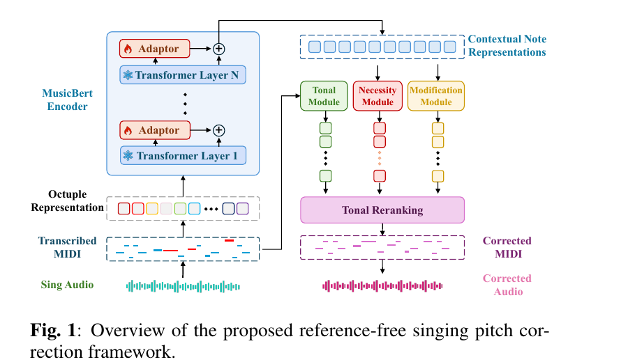

Original abstract
Index Terms—
ICASSP · RESEARCH DEMO
A reference-free system that detects note-level pitch errors and edits them with singing-aware context and tonal constraints—without target melodies, accompaniment, or ground-truth keys.
This page contains complete WAV reconstructions (about 801 MB). Audio is loaded only when you click play.
Paper overview
Original abstract
Index Terms—

Held-out real test set
| Method | Acc. ↑ | ΔAcc. ↑ | Repair ↑ | Harm ↓ |
|---|---|---|---|---|
| Input | 73.25 | 0.00 | – | – |
| Key Snapping | 71.76 | -1.49 | 20.76 | 9.62 |
| BERT-APC | 79.44 | +6.19 | 26.18 | 1.11 |
| Ours | 83.43 | +10.18 | 46.81 | 3.19 |
Reproduced from Table 1 of the paper. The proposed method improves accuracy by 3.99 percentage points over BERT-APC.
Qualitative examples
Each group includes the original singing performance and three available reconstruction methods. WAV data is requested only when its Play button is pressed.